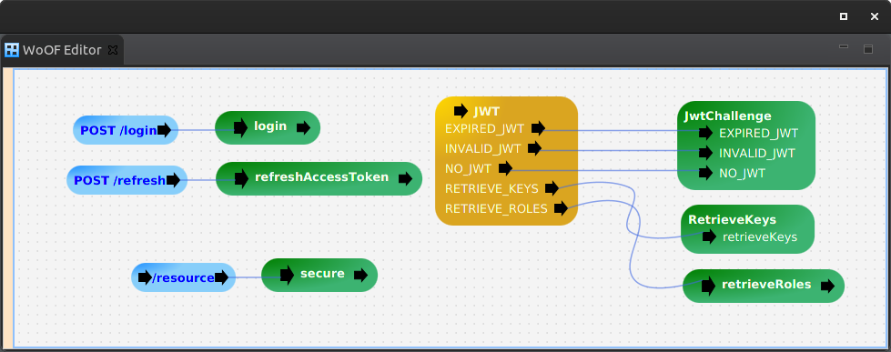

For smaller applications, the JWT Resource (application) server and JWT Authority server may be combined.
This tutorial demonstrates combining them.
The configuration contains both the JWT Resource and JWT Authority. It is joined by the CombinedServerRetrieveValidateKeysSectionSource that handles the JWT keys being loaded from the JwtAuthority.
As the JWT Authority can be clustered, it allows the application to also be clustered.
The following shows the ease of using the application:
@RegisterExtension
public MockWoofServerExtension server = new MockWoofServerExtension();
private String refreshToken;
@Test
public void loginAndAccessSecureResource() throws Exception {
// Not able to access resource without access token
MockWoofResponse response = this.server.send(MockHttpServer.mockRequest("/resource").secure(true));
assertEquals(401, response.getStatus().getStatusCode(), "Requires authentication to access resource");
// Undertake login
Credentials credentials = new Credentials("daniel", "daniel");
response = this.server
.send(MockWoofServer.mockJsonRequest(HttpMethod.POST, "/login", credentials).secure(true));
assertEquals(200, response.getStatus().getStatusCode(), "Should be successful");
// Extract the access token
Token accessToken = response.getJson(200, Token.class);
assertNotNull(accessToken.getToken(), "Should have access token");
// Obtain the refresh token for further tests
this.refreshToken = response.getCookie(JwtTokens.REFRESH_TOKEN_COOKIE_NAME).getValue();
// Access the secured resource
response = this.server.send(MockHttpServer.mockRequest("/resource").secure(true).header("authorization",
"Bearer " + accessToken.getToken()));
response.assertResponse(200, "Hello JWT secured World");
}
@Test
public void refreshAccessTokenToAccessSecureResource() throws Exception {
// Undertake login and access with original access token
this.loginAndAccessSecureResource();
// Obtain new access token
MockWoofResponse response = this.server.send(MockHttpServer.mockRequest("/refresh").secure(true)
.method(HttpMethod.POST).cookie(JwtTokens.REFRESH_TOKEN_COOKIE_NAME, this.refreshToken));
Token token = response.getJson(200, Token.class);
assertNotNull("Should have access token", token.getToken());
// Access the secured resource with refreshed access token
response = this.server.send(MockHttpServer.mockRequest("/resource").secure(true).header("authorization",
"Bearer " + token.getToken()));
response.assertResponse(200, "Hello JWT secured World");
}
The next tutorial covers documenting via OpenAPI / Swagger.